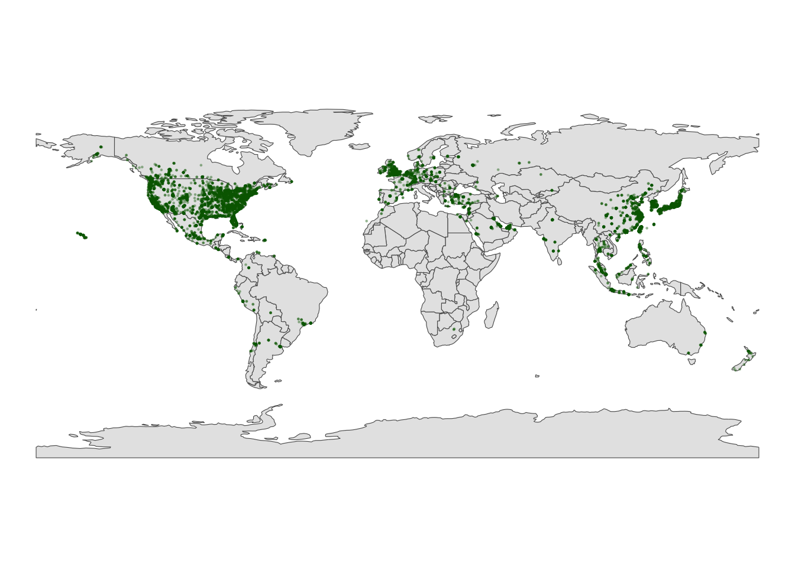
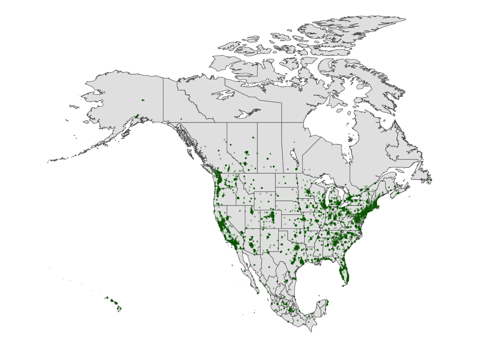
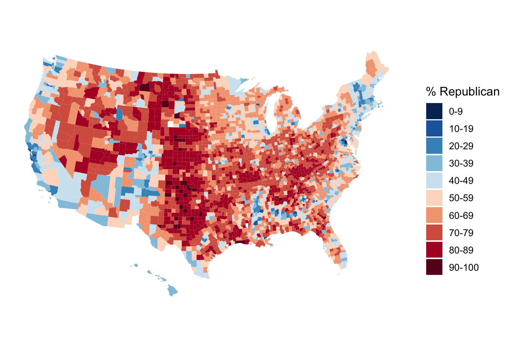

Spatial Viz
Use this file for practice with the spatial viz in-class activity. Refer to the class website for details.
12.1 Exercises
Example 1
Both addresses used between 0 and 450 therms per month. There seem to be two types of months – those with lower use around 50 therms and those with higher use around 300/400 therms.
# Import the data and only keep 2 addresses
#energy <- read.csv("https://mac-stat.github.io/data/MacNaturalGas.csv") |>
# dplyr::mutate(date = as.Date(paste0(month, "/1/", year), "%m/%d/%Y"))
#energy_imported <- energy |>
# filter(address != "c")
# Check it out
#head(energy_imported)
#ggplot(energy_imported, aes(x = therms, fill = address)) +
# geom_density(alpha = 0.5)Example 2
Energy use is seasonal, with higher usage in winter months. It seems that address a uses slightly more energy.
Example 3
At both addresses, typical energy use increased after renovations.
Example 4
lurking variable = outdoor temperature (as reflected by hdd)
Example 5
BUT this was explained by a confounding or omitted or lurking variable: hdd (outdoor temperature)
- After renovation…
- it happened to be colder…
- which then leads to higher energy use.
Thus, when controlling for outdoor temps, renovations led to decreased energy use.
Exercise 3: Your turn
Exercise 3: A simple scatterplot
It would be nice to also have some actual reference maps of countries in the background.
Exercise 4: Adding a country-level background
Part a
Part b
library(tidyverse)
# What does this code produce?
# What geom are we using for the point map?
ggplot(world_boundaries) +
geom_sf()
# Load package needed to change map theme
library(mosaic)
# Add a point for each Starbucks
# NOTE: The Starbucks info is in our starbucks data, not world_boundaries
# How does this change how we use geom_point?!
ggplot(world_boundaries) +
geom_sf() +
geom_point(
data = starbucks,
aes(x = Longitude, y = Latitude),
alpha = 0.3, size = 0.2, color = "darkgreen"
) +
theme_map()
###Exercise 5: Zooming in on some countries {.unnumbered}
Part a
Part b


Exercise 6: A state and county-level map
Part a
starbucks_midwest <- starbucks |>
filter(State.Province %in% c("MN", "ND", "SD", "WI"))
# Load packages
library(sf)
library(maps)
# Get the boundaries
midwest_boundaries <- st_as_sf(
maps::map("county",
region = c("minnesota", "wisconsin", "north dakota", "south dakota"),
fill = TRUE, plot = FALSE))
# Check it out
head(midwest_boundaries)Simple feature collection with 6 features and 1 field
Geometry type: MULTIPOLYGON
Dimension: XY
Bounding box: xmin: -96.81268 ymin: 45.05167 xmax: -93.01397 ymax: 48.53526
Geodetic CRS: +proj=longlat +ellps=clrk66 +no_defs +type=crs
ID geom
minnesota,aitkin minnesota,aitkin MULTIPOLYGON (((-93.03689 4...
minnesota,anoka minnesota,anoka MULTIPOLYGON (((-93.51817 4...
minnesota,becker minnesota,becker MULTIPOLYGON (((-95.14537 4...
minnesota,beltrami minnesota,beltrami MULTIPOLYGON (((-95.58655 4...
minnesota,benton minnesota,benton MULTIPOLYGON (((-93.77027 4...
minnesota,big stone minnesota,big stone MULTIPOLYGON (((-96.10794 4...Part b
Adjust the code below to make the plot! Remove the # to run it.

Exercise 7: Contour maps
Especially when there are lots of point locations, and those locations start overlapping on a map, it can be tough to visualize areas of higher density. Consider the Starbucks locations in Canada, Mexico, and the US that we mapped earlier:
# Point map (we made this earlier)
ggplot(cma_boundaries) +
geom_sf() +
geom_point(
data = starbucks_cma,
aes(x = Longitude, y = Latitude),
alpha = 0.3,
size = 0.2,
color = "darkgreen"
) +
coord_sf(xlim = c(-179.14, -50), ylim = c(14.54, 83.11)) +
theme_map()
Now check out the contour map.

Exercises Part 3: Choropleth maps
Spatial data isn’t always in the form of point locations! For example, recall the state and county-level data on presidential elections.
In these datasets, we’re interested in the overall election outcome by region (state or county), not the specific geographic location of some observation. Let’s wrangle our data first.
We’ll focus on just a few variables of interest, and create a new variable (repub_20_categories) that discretizes the repub_pct_20 variable into increments of 5 percentage points (for states) or 10 percentage points (for counties):
elections_by_state <- elections_by_state |>
filter(state_abbr != "DC") |>
select(state_name, state_abbr, repub_pct_20) |>
mutate(repub_20_categories =
cut(repub_pct_20,
breaks = seq(30, 70, by = 5),
labels = c("30-34", "35-39", "40-44", "45-49",
"50-54", "55-59", "60-64", "65-70"),
include.lowest = TRUE))
elections_by_counties <- elections_by_counties |>
select(state_name, state_abbr, county_name, county_fips,
repub_pct_20, median_age, median_rent) |>
mutate(repub_20_categories =
cut(repub_pct_20,
breaks = seq(0, 100, by = 10),
labels = c("0-9", "10-19", "20-29", "30-39", "40-49",
"50-59", "60-69", "70-79", "80-89", "90-100"),
include.lowest = TRUE))
elections_by_counties <- elections_by_counties |>
mutate(county_fips = as.character(county_fips)) |>
mutate(county_fips =
ifelse(nchar(county_fips) == 4, paste0("0", county_fips), county_fips))Exercise 8: State-level choropleth maps
Part a
# Get the latitude and longitude coordinates of state boundaries
states_map <- map_data("state")
# Check it out
head(states_map) long lat group order region subregion
1 -87.46201 30.38968 1 1 alabama <NA>
2 -87.48493 30.37249 1 2 alabama <NA>
3 -87.52503 30.37249 1 3 alabama <NA>
4 -87.53076 30.33239 1 4 alabama <NA>
5 -87.57087 30.32665 1 5 alabama <NA>
6 -87.58806 30.32665 1 6 alabama <NA> long lat group order region subregion
1 -87.46201 30.38968 1 1 alabama <NA>
2 -87.48493 30.37249 1 2 alabama <NA>
3 -87.52503 30.37249 1 3 alabama <NA>
4 -87.53076 30.33239 1 4 alabama <NA>
5 -87.57087 30.32665 1 5 alabama <NA>
6 -87.58806 30.32665 1 6 alabama <NA> state_name state_abbr repub_pct_20 repub_20_categories
1 alabama AL 62.03 60-64
2 arkansas AR 62.40 60-64
3 arizona AZ 49.06 45-49
4 california CA 34.33 30-34
5 colorado CO 41.90 40-44
6 connecticut CT 39.21 35-39Part b
# Note where the dataset, elections_by_state, is used
# Note where the background map, states_map, is used
ggplot(elections_by_state, aes(map_id = state_name, fill = repub_pct_20)) +
geom_map(map = states_map) +
expand_limits(x = states_map$long, y = states_map$lat) +
theme_map()
# Make it nicer!
ggplot(elections_by_state, aes(map_id = state_name, fill = repub_pct_20)) +
geom_map(map = states_map) +
expand_limits(x = states_map$long, y = states_map$lat) +
theme_map() +
scale_fill_gradientn(name = "% Republican", colors = c("blue", "purple", "red"), values = scales::rescale(seq(0, 100, by = 5)))
ggplot(elections_by_state, aes(map_id = state_name, fill = repub_20_categories)) +
geom_map(map = states_map) +
expand_limits(x = states_map$long, y = states_map$lat) +
theme_map()
# Load package needed for refining color palette
library(RColorBrewer)
# Now fix the colors
ggplot(elections_by_state, aes(map_id = state_name, fill = repub_20_categories)) +
geom_map(map = states_map) +
expand_limits(x = states_map$long, y = states_map$lat) +
theme_map() +
scale_fill_manual(values = rev(brewer.pal(8, "RdBu")), name = "% Republican")
Part c
# Get only the starbucks data from the US
starbucks_us <- starbucks |>
filter(Country == "US")
# Map it
ggplot(elections_by_state, aes(map_id = state_name, fill = repub_20_categories)) +
geom_map(map = states_map) +
geom_point(
data = starbucks_us,
aes(x = Longitude, y = Latitude),
size = 0.05,
alpha = 0.2,
inherit.aes = FALSE
) +
expand_limits(x = states_map$long, y = states_map$lat) +
theme_map() +
scale_fill_manual(values = rev(brewer.pal(8, "RdBu")), name = "% Republican")
Part d
geom_map()
Exercise 9: County-level choropleth maps
Let’s map the 2020 Republican support in each county.
Part a
We again need two pieces of information.
Data on elections in each county, which we already have:
elections_by_county.A background map of county boundaries in the US, stored in the
county_mapdataset in thesocvizpackage:
# Get the latitude and longitude coordinates of county boundaries
library(socviz)
data(county_map)
# Check it out
head(county_map) long lat order hole piece group id
1 1225889 -1275020 1 FALSE 1 0500000US01001.1 01001
2 1235324 -1274008 2 FALSE 1 0500000US01001.1 01001
3 1244873 -1272331 3 FALSE 1 0500000US01001.1 01001
4 1244129 -1267515 4 FALSE 1 0500000US01001.1 01001
5 1272010 -1262889 5 FALSE 1 0500000US01001.1 01001
6 1276797 -1295514 6 FALSE 1 0500000US01001.1 01001Pause
Important detail: We officially have a headache. Our county_map refers to each county by a 5-number id. Our elections_by_counties data refers to each county by a county_fips code, which is mostly the same as id, BUT drops any 0’s at the beginning of the code.
long lat order hole piece group id
1 1225889 -1275020 1 FALSE 1 0500000US01001.1 01001
2 1235324 -1274008 2 FALSE 1 0500000US01001.1 01001
3 1244873 -1272331 3 FALSE 1 0500000US01001.1 01001
4 1244129 -1267515 4 FALSE 1 0500000US01001.1 01001
5 1272010 -1262889 5 FALSE 1 0500000US01001.1 01001
6 1276797 -1295514 6 FALSE 1 0500000US01001.1 01001 state_name state_abbr county_name county_fips repub_pct_20 median_age
1 Alabama AL Autauga County 01001 71.44 37.5
2 Alabama AL Baldwin County 01003 76.17 41.5
3 Alabama AL Barbour County 01005 53.45 38.3
4 Alabama AL Bibb County 01007 78.43 39.4
5 Alabama AL Blount County 01009 89.57 39.6
6 Alabama AL Bullock County 01011 24.84 39.6
median_rent repub_20_categories
1 668 70-79
2 693 70-79
3 382 50-59
4 351 70-79
5 403 80-89
6 276 20-29This just means that we have to wrangle the data so that it can communicate with the background map.
# Add 0's at the beginning of any fips_code that's fewer than 5 numbers long
# Don't worry about the syntax
elections_by_counties <- elections_by_counties |>
mutate(county_fips = as.character(county_fips)) |>
mutate(county_fips =
ifelse(nchar(county_fips) == 4, paste0("0", county_fips), county_fips))Part b
Now map Republican support by county. Let’s go straight to the discretized repub_20_categories variable, and a good color scale.
ggplot(elections_by_counties, aes(map_id = county_fips, fill = repub_20_categories)) +
geom_map(map = county_map) +
scale_fill_manual(values = rev(brewer.pal(10, "RdBu")), name = "% Republican") +
expand_limits(x = county_map$long, y = county_map$lat) +
theme_map() +
theme(legend.position = "right") +
coord_equal()
Exercise 10: Play around!
ggplot(elections_by_counties, aes(map_id = county_fips, fill = median_rent)) +
geom_map(map = county_map) +
expand_limits(x = county_map$long, y = county_map$lat) +
theme_map() +
theme(legend.position = "right") +
coord_equal() +
scale_fill_gradientn(name = "median rent", colors = c("white", "lightgreen", "darkgreen"))
ggplot(elections_by_counties, aes(map_id = county_fips, fill = median_age)) +
geom_map(map = county_map) +
expand_limits(x = county_map$long, y = county_map$lat) +
theme_map() +
theme(legend.position = "right") +
coord_equal() +
scale_fill_gradientn(name = "median age", colors = terrain.colors(10))